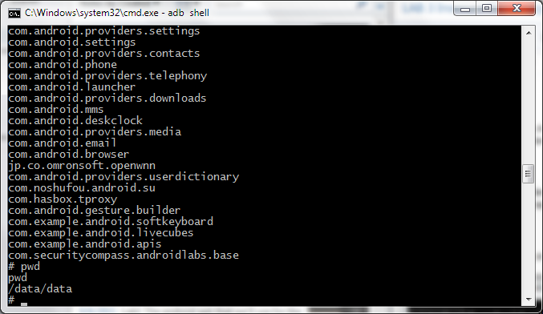
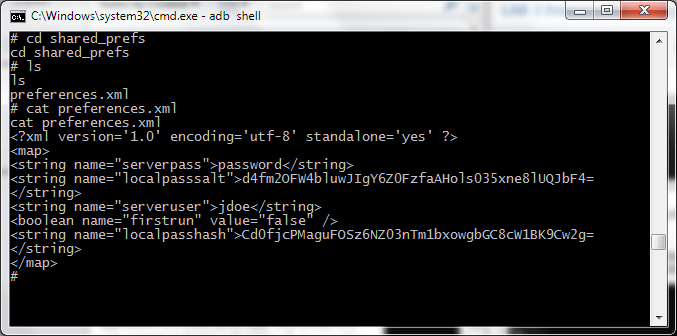

LAB 3 Insecure file storage
One of the key concepts to any mobile hacking attempts is the ability to proxy or intercept traffic to and from the server. We will be trapping the application traffic using a proxy server in an effort to act as the man in the middle. Often, you'll be able to see how the mobile application responds when using these techniques.
For this lab, we will be taking a look at the file permissions and preferences file local to any application. For any android app, data for the app including application preferences are stored in
/data/data/
A good way to connect to a device's filesystem is to use the android debugging bridge (adb). It comes with the Android SDK and can be found in the platform-tools directory. With the android emulator running, you use adb to browse the device ifle system by:
adb shell
Note: If you are testing using a real device you must enable "USB Debugging" under the application development menu on your device.
 The # denotes that you've successfully entered the device filesystem. Browse to the /data/data directory and list it.
The # denotes that you've successfully entered the device filesystem. Browse to the /data/data directory and list it.

If you look into this directory, we can find a list of Java package directories. Lets go into the com.securitycompass.base directory, which is the directory that Android has given us to store user data.

Let's go into the shared_prefs directory. This directory is common to all android applicaitons and holds the application preferences set by the user.

The application preferences often hold information that will be disclosed to an attacker. In this example we can extract the password salt and the username for the last logged in user. You can see that in this case, it is "jdoe" and the users password of "password" which is what we logged in with in Lab 1.
Both the password hash and the password salt can be found in this preferences file, stored insecurely.
Let's go into the SDCARD directory. SD cards are mounted at /mnt/sdcard for the emulator (this may differ on a real device).
Also, you'll notice that within the application, statemnets are created in what seems like a webview or HTML file. We can find this HTML file on the SDCARD which can be accessed by going to
/mnt/sdcard/
the file will be named by number date and opening it will show you the insecurely stored statement file in HTML format. anyone with access to the sdcard will be able to gain access to this file. Also other applications could read from the file.
 Take a look at the file permissoins:
Take a look at the file permissoins:
----rwxr-x system sdcard_rw 160 2011-08-03 16:48 1312361332270.html
the file is stored as world readable, allowing any other application to access the file.

We could also simply just read the HTML file right away, disclosing information about the user's bank account and statements.